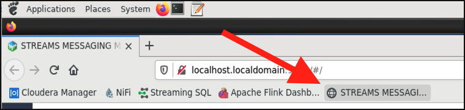
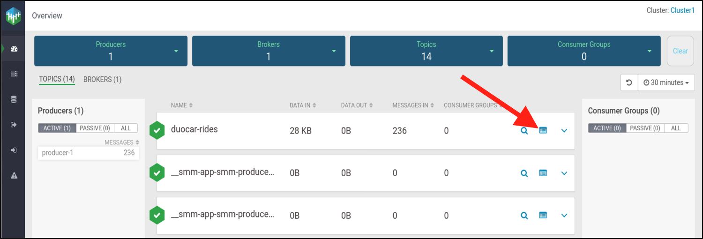
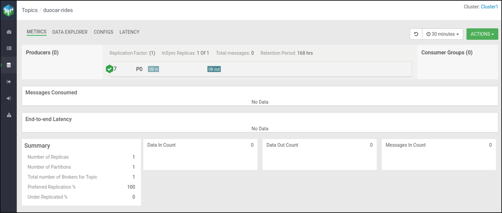
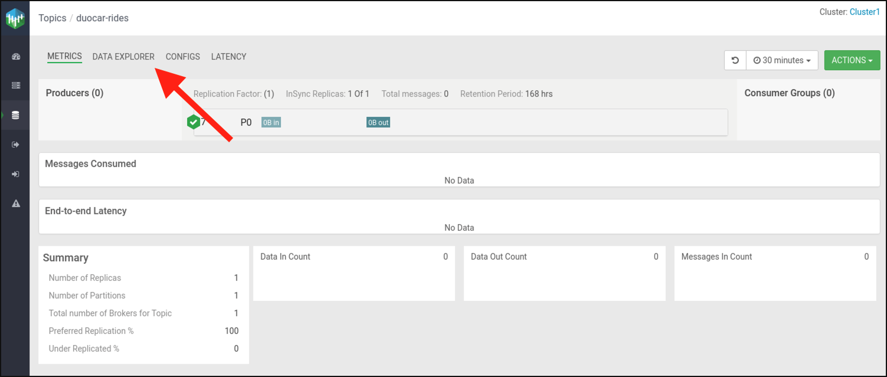
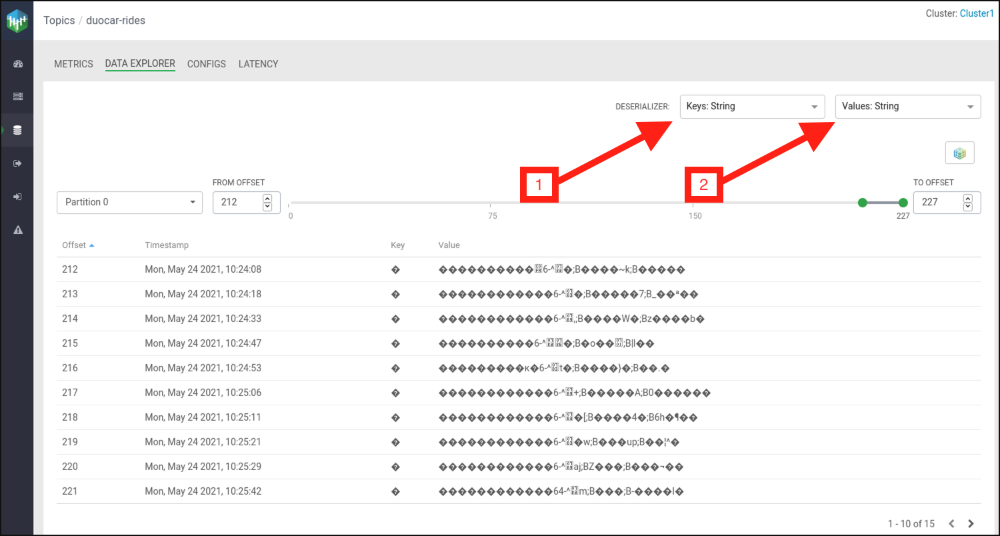
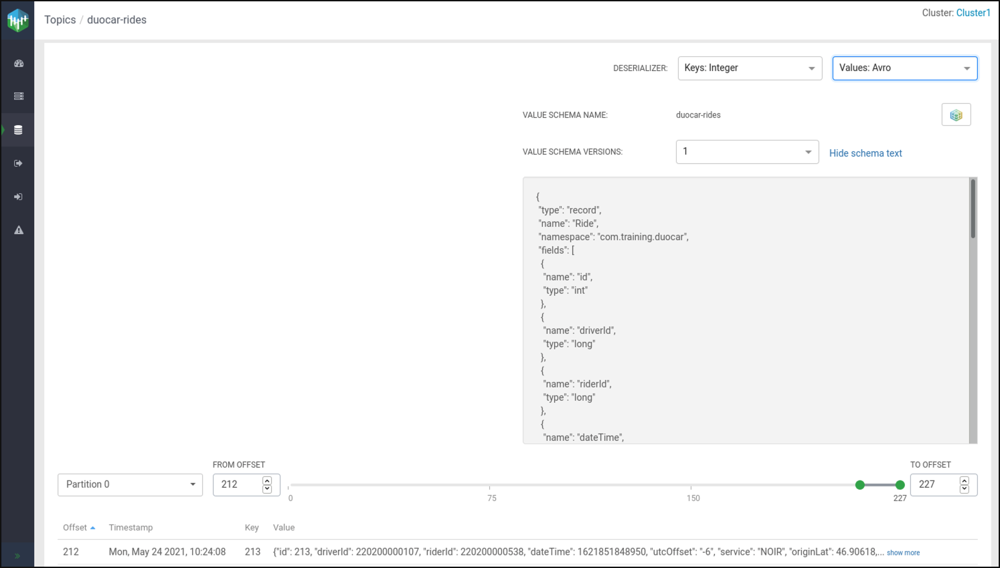
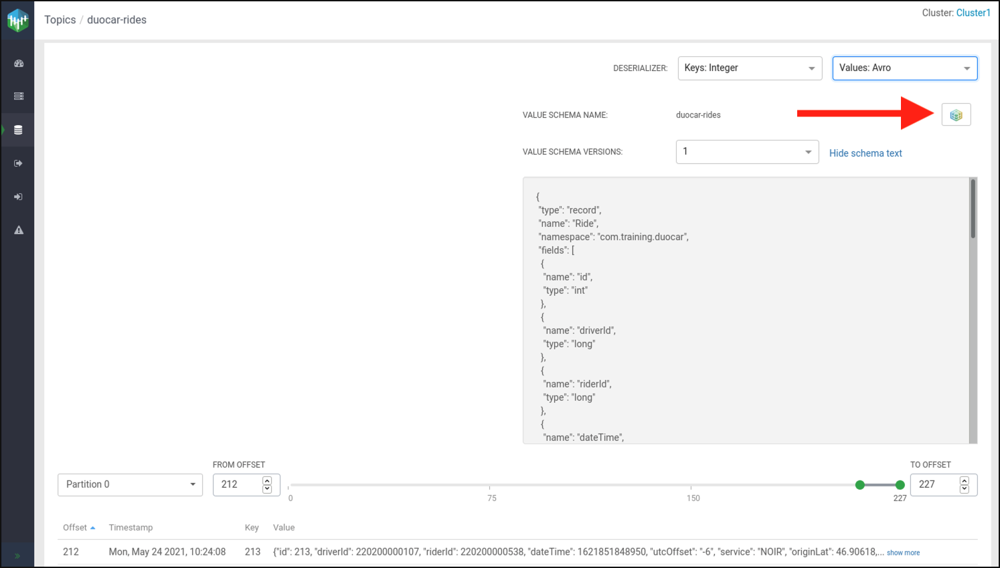
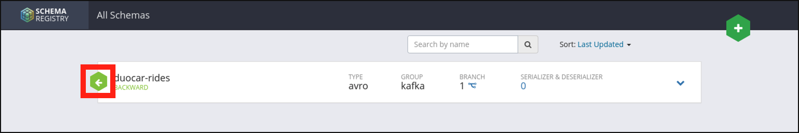
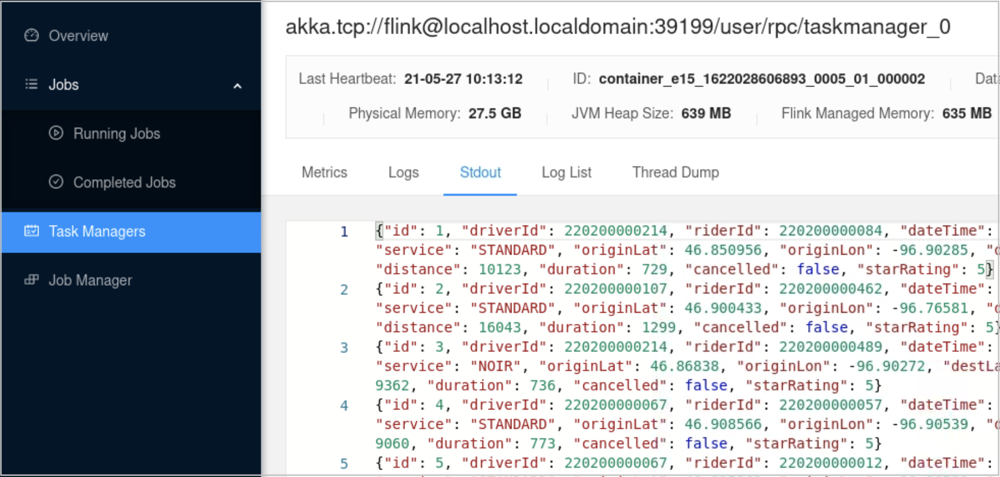

Creating a Streaming Application with a Kafka Source
This is just an example of an exercise for reference purposes.
In this exercise, you will use Flink to read Avro data from a Kafka source. In the second half of the exercise, you will use Flink to transform the data and stream the maximum driver distance to Kafka.
Generate Kafka Data Stream
In this portion of the exercise, you will use a pre-built data generator to create a Kafka data stream. The data generator writes a stream of ride data to Kafka in the Avro data format. The schema for the data is stored in the Schema Registry. You will use the Streams Messaging Manager and Schema Registry to view the data and schema, respectively.
- Open a terminal and navigate to the
data/generatordirectory.$ cd ~/training_materials/flink/data/generator - Build the data generator with the following Maven command:
$ mvn clean package - Install the generator library file in your local Maven repository.
$ mvn installNote: This step is required because we are using Avro data. The following Flink job will depend on this library for the Ride class generated by Avro.
-
Run the data generator with the following commands:
$ scripts/generate-rides.sh -
Leave the terminal window open and the generator running.
-
Open Firefox.
-
Chose the STREAMS MESSAGING MANAGER bookmark. 
-
Click the profile icon for the
duocar-ridestopic.  - View the
duocar-ridesmetrics. Note, the metrics displayed are for the selected time interval as specified in the drop-down selection on the top right of the metrics page. Since this is a new stream, the metrics will likely be zero until the alloted time has passed.  - Select Data Explorer. 
- (1) Select Integer for the Keys Deserializer. (2) Select Avro for the Values Deserializer. You will see the Keys and Values in the table below change from binary to human-readable. The schema for the Avro data will also be displayed.  
- Click the Schema Registry icon to open the Schema Registry. 
- Click the left-pointing arrow next to
duocar-ridesto view more information about the schema. You may close the Schema Registry tab in Firefox when you are done. 
{kind=link}
{kind=link}
{kind=link}
{kind=link}
{kind=link}
{kind=link}
{kind=link}
{kind=link}
Read Kafka Data Stream with Flink
In this exercise, you will run a Flink job to read a stream of rides from Kafka. First, you will run the job locally. Then, you will run the job on the cluster.
- Open IntelliJ.
- Open
~/training_materials/flink/kafkaas a new project. - Navigate to
KafkaJobin thesrcdirectory and open it in the editor. - Examine the
mainmethod of theKafkaJob. - Run the
KafkaJobin IntelliJ and view the output. - Stop
KafkaJob. - Open a terminal.
- Navigate to the Kafka exercise directory.
$ cd /home/training/training_materials/flink/kafka -
Build and package KafkaJob.
$ mvn clean package -
Run the job on the cluster.
$ flink run \ --detached \ --jobmanager yarn-cluster \ --yarnname KafkaJob \ --class com.training.flink.KafkaJob \ target/kafka-1.0-SNAPSHOT.jar - View the job in the Flink Dashboard.
- Verify the messages are being sent to standard output. 
- Cancel the job using the Flink Dashboard.
{kind=link}
Write Driver's Maximum Distance to Kafka
In this exercise, you will transform the stream of ride data to a stream of the maximum distance for each driver that will be dynamically updated as new rides are processed. You will create a new Kafka producer and use the transformations you learned in the streaming exercise to create a new stream of strings with each drivers current maximum distance in the following format:
{ "driver": 12345, "maxDistance": 999999 }
Follow the steps below to modify KafkaJob to produce the desired output. Run the job locally until you have it working.
Once the job works, submit it to the cluster.
Note: The solution for the following steps is located in the
solutionfolder next to thesrcfolder in IntelliJ or, specifically,~/training_materials/flink/kafka/solution/main/java/com/training/flink/KafkaJob.javafor your reference. You cannot run the solution directly from the solution folder, but you can copy/paste the code or file into thesrcto execute it.
- Add a FlinkKafkaProducer to write the new string to a Kafka topic named duocar-driver-max-distance. Hint, consider SimpleStringSchema for your schema.
- Group your ride stream data by driver.
- Find the maximum distance.
- Convert the stream of POJO ride data to a string of driver ID, maxDistance as shown above.
- Add the Kafka producer as a sink. Hint, replace
.print(). - Once you have completed your code and submitted it to the cluster, view the results in STREAMS MESSAGING MANAGER and the Flink Dashboard.
- Cancel the job.
- Return the data generation script we started at the beginning of the lab and stop it.